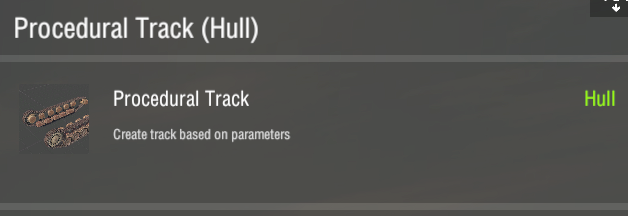
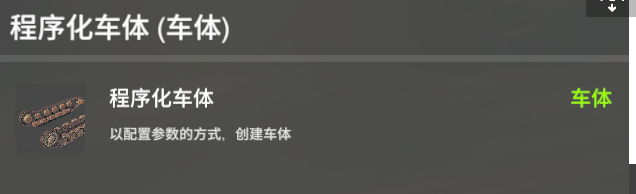
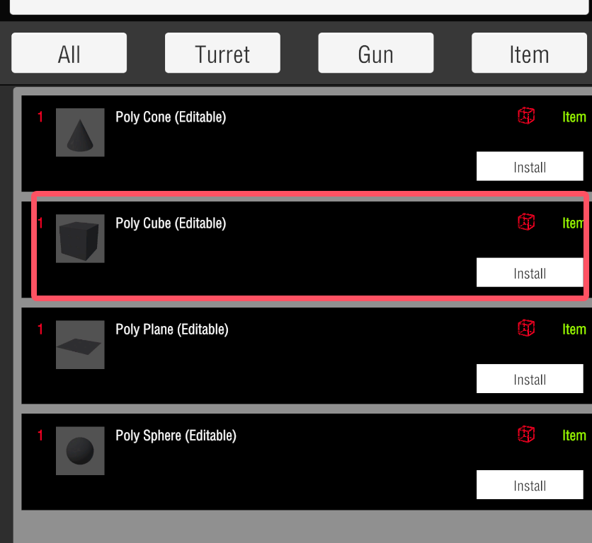
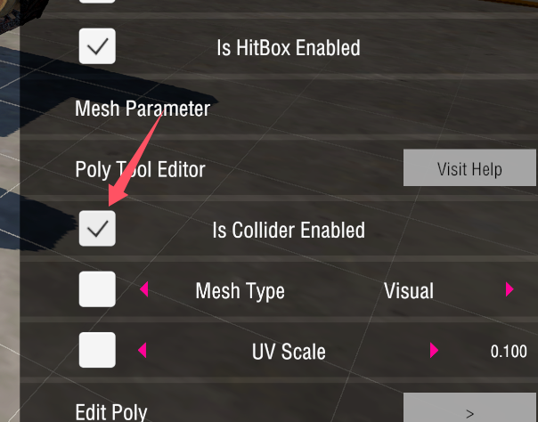
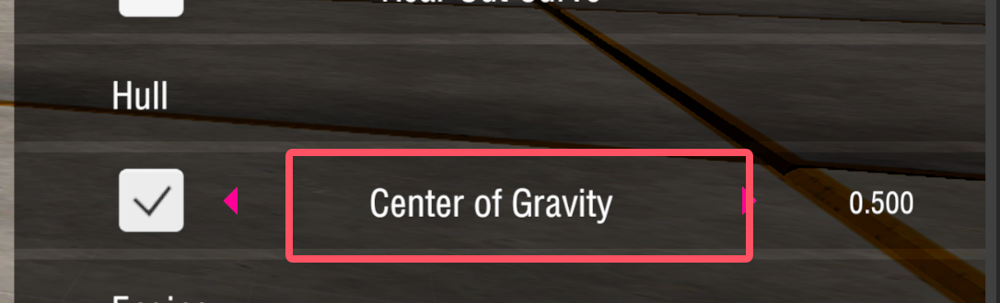

4. Track Tutorial 履带编辑器
Dedicated Equipment 专用配件
You can find procedural track at the start.
你可以一开始在列表中找到程序化车体


Video Tutorial 视频教程
Attention 注意事项
Collision Setup 设置碰撞
Configure objects with collision in their slots to ensure the vehicle can move properly. Different types of colliders can affect the vehicle's physics in various ways.
在其插槽上配置带有碰撞的物体，以确保载具能够正常移动。不同类型的碰撞体会对载具的物理效果产生不同的影响。
Pick Editable Poly 选择可编辑物体
Enable its collider
启用他的碰撞


Adjust center of gravity 调整重心
When creating your custom tank, adjusting the center of gravity is an important step to ensure your tank handles well. A higher center of gravity can cause the tank to tip over easily when turning or driving on uneven terrain, making it hard to control. By lowering the center of gravity or positioning it correctly, you can make your tank more stable and easier to handle, even in tough conditions. Make sure to experiment with different settings to find the perfect balance for your design!
在创建您自定义坦克时，调整重心是确保坦克良好操控的关键步骤。重心过高会导致坦克在转弯或行驶不平坦地形时容易倾翻，难以控制。通过降低重心或正确定位，可以使您的坦克更加稳定，即使在复杂环境中也能轻松驾驭。请尝试不同的设置，以找到适合您设计的最佳平衡！
